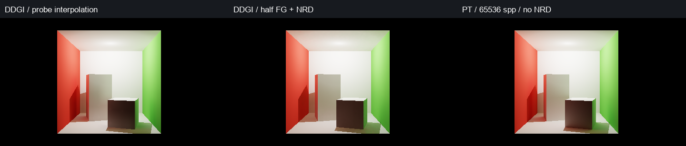
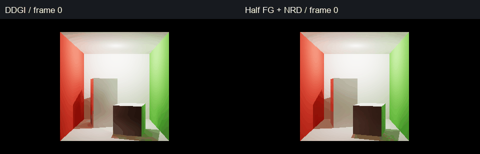

相同 Lambert Cornell、点光源、相机与 480×270 输出。灯光使用 Test Harness 衰减：距离下限 1、范围半径 4。PT reference 未降噪，8 spp/帧；两组独立 32768 spp 累积的平均构成 65536 spp 参考。
本次结论：此配置下原始 DDGI 的 MSE、HDR-FLIP 和时间方差均较低，耗时也较少。半分辨率 FG + NRD 没有带来整体指标改善；不能沿用旧灯光、全分辨率累积 FG 实验的结论。

| 方案 | MSE ↓ | HDR-FLIP ↓ | 时间方差 ↓ | GPU 帧耗时 ms ↓ |
|---|---|---|---|---|
| 原始 DDGI：直接查询 probe | 1.168769e-05 | 0.12039 | 2.381736e-08 | 0.2650 |
| DDGI + 半分辨率 FG + NRD | 1.900586e-05 | 0.12600 | 3.251584e-07 | 0.3869 |
画质指标对稳定后的连续 64 张单帧输出逐帧计算，再平均指标；展示图也是单帧，没有额外 Accumulate。MSE 使用线性 HDR 完整光照，统计可见表面像素；HDR-FLIP 使用统一参考曝光范围和 PPD 67。时间方差是固定像素 RGB 在 64 帧中的总体方差，再对像素和通道平均。
PT 最多 31 surface bounces、NEE/MIS 开启、RR 关闭。两组独立 32768 spp 结果间 MSE 为 8.836118e-08；据此估计最终参考残余采样噪声 MSE 为 2.209029e-08，仅占较好方案误差的 0.19%，达到本实验小于 1% 的收敛检查标准。它仍是有限采样、有限反弹参考。
两种 DDGI 均先更新 probe 2048 帧，再预热 512 帧；FG 的 NRD 在 probe 预热后重置。采集和计时期间持续更新 probe。连续样本前后各 32 帧平均亮度变化分别为 0.045% / 0.105%。下方为连续单帧动画。

| 方案 | DDGI 含 probe 更新 | NRD | 导向准备 + 上采样合成 | GBuffer |
|---|---|---|---|---|
| 原始 DDGI：直接查询 probe | 0.2464 | 0.0000 | 0.0000 | 0.0155 |
| DDGI + 半分辨率 FG + NRD | 0.2804 | 0.0721 | 0.0109 | 0.0186 |
RTX 5070，D3D12；每种方案 255 个 GPU 时间戳区间。主表为整个 RenderGraph 的 GPU 时间，包含 GBuffer、probe 更新、屏幕着色、NRD/重建及色调映射，不含文件保存、CPU 调度和呈现等待。仅代表此场景与分辨率，不外推复杂场景。
半分辨率指 240×135，每个 2×2 像素块只在固定代表像素追踪一根漫反射 FG 射线，射线数约为全分辨率的四分之一。NRD 也在 240×135 运行；直接光和反射率仍为 480×270，使用深度/法线引导的 4×4 邻域重建间接光。纯 Lambert 镜面 lobe 为零。此采样/重建会损失细节；本实验只测固定镜头，不代表运动与细小几何的表现。
Probe 9×9×9，每 probe 256 rays，hysteresis 0.97；RELAX DiffuseSpecular 默认参数、maxIntensity=10000。显示统一 +3 EV / ACES fitted / sRGB；HDR-FLIP 曝光参数保存在 summary.json。新公式参考已重算，未复用旧灯光实验图。
build\windows-vs2022\bin\Release\Mogwai.exe --device-type d3d12 --headless --deferred --script tests/ddgi/three_way_half_gather.py --width 480 --height 270 --logfile build/three-way-half-gather.log python tests/ddgi/score_three_way_half_gather.py
交互入口：Run-HalfGather.cmd；统一启动器选择 DDGIHalf、DDGI 或 PathTracer（原始累积 PT）。原始 EXR、65536 spp reference 和时间戳保存在 build/three-way-half-gather。结果 JSON · 逐帧指标